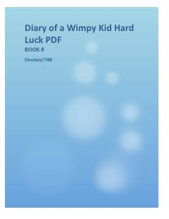

DOGreg Hefflining omadsizliklar va qiziqarli sarguzashtlarga boy navbatdagi kundaliklari.
Greg Heffli o'zining do'stlari va oilasi bilan bog'liq yangi qiyinchiliklarga duch keladi. U omadsizliklar girdobida qolib, hayotini yaxshilashga va maktabdagi muammolarni hal qilishga urinadi.